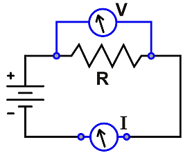
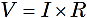
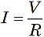
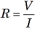
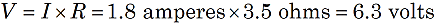
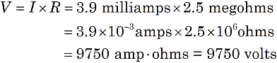

Finding Voltage with Ohm's Law
|

Figure 1. A voltage V dropping across a resistor R in a circuit with a current I. |
In the early 1800's, George Ohm discovered a mathematical relationship for electric circuits with simple resistors. With a circuit having a current I (in amperes), the voltage (V, in volts) dropped across a resistance (R, in ohms) is V = I x R. This relationship often appears three ways:
  
The first form allows us to calculate the voltage drop across a resistor for a given current in a circuit. Suppose an ammeter measures a current of I = 1.8 amperes through a resistance of R = 3.5 ohm. Then the voltage dropped by the resistance is:

Notice the units: 1 volt per ohm is defined to yield 1 ampere of current.
You must be careful working with the units. Currents are often measured in milliamps (1/1,000 ampere) or even microamps (1/1,000,000 ampere). Resistance may be in kilohms (1,000 ohms) or even megohms (1,000,000 ohms).
Suppose a current of 3.9 milliamps passes through a 2.5 megohm resistor. The voltage across the resistor:

It is often helpful to convert metric prefixes to scientific notation.
|
micro- = 10–6 |
milli- = 10–3 |
kilo- = 103 |
mega- = 106 |